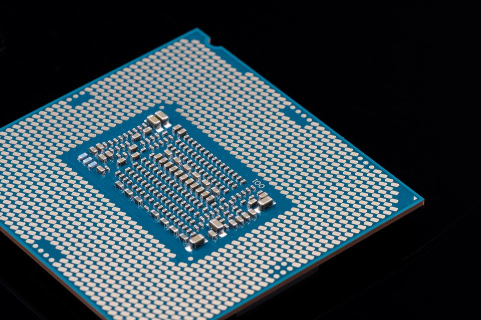

Processor
Processorn är den viktigaste delen i datorn. Det är vad som gör datorn till att vara så smart, man kan kalla den för datorns hjärna. Det är processorn som gör alla beräkningar i datorn och tar fram svaren. Vilken processor du behöver beror helt på vad du ska använda din dator till, kommer du använda den till tunga program så kommer du behöva en bättre processor. Det finns massvis med varianter på processorer och de ledande försäljare inom processorer är Intel eller AMD. De dyrare varianterna kommer du behöva ifall datorn ska arbeta med större projekt som till exempel videoredigering eller Cad ritningar. Ifall du letar efter processorer kan du kolla in denna sidan.
klicka på logan!